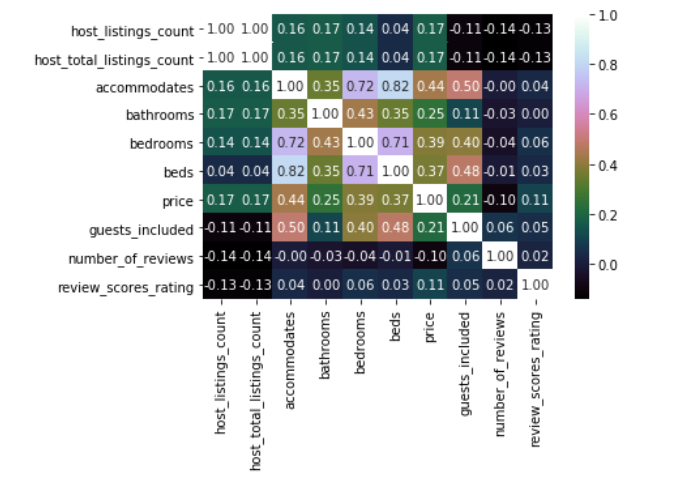

What I found from analyzing Airbnb dataset!

I'm currently working on Udacity data science nano degree for the first project I had to analyze any dataset to answer 3 questions so I choose airbnb.
However I've worked with many datasets and currently I'm working as a data scientist. This is the first time for me to write a blog.
The Boston dataset is open for any one to use for practice to enhance your skills.
Well I've used CRISP-DM process for this analysis which is used by many data scientist, this process is separated in 6 modules.
- Develop business understanding
- Develop data understanding
- Preparing data
- Modeling data
- Evaluating results
- Develop changes according on your results
As you probably noticed, we cant model any data here, we will just explore the data using statistical analysis.
Let's get started!
Business and data understanding
Well i'started looking at the listing data and then I was very curious about what is the most effective thing that can affect prices?
At the first glance I saw a low of things that can be very effective from the listing such as bed type,number of bathrooms, number of rooms, and also some data about the host! .
From looking at this data I decided that these are the 3 questions that we will explore
- What are the property types according to prices?
- Does city affect price?
- What is the most expensive neighbourhood?
Data Preparation, and answers to the questions
Fortunately, to answer all of the questions I didn't need to use all the features in the dataset it was huge i only needed feature that was almost clean so I had to do very little changes.
The main features that I used for the analysis were:
- accommodates: number of persons
- bathrooms: number of bathrooms
- bedrooms: number of bedrooms
- beds :number of beds
- price: price of unit
- guests_included: number of gusts
- number_of_reviews: reviews this host got
- review_scores_rating: review score
- amenities: tv,wifi etc.
- city: in which city this apt,room,etc.
- neighbourhood: in which neighbourhood
- host_is_superhost: is host is super generous
- property_type: apt, house, shared room, etc.
- minimum nights: minimum number of nights that gust can stay.
- maximum nights: maximum number of nights that gust can stay.
Now after explaining features used in a high level it's time to view some statistics and charts.
1. What are the property types according to prices?
As we can see from our chart shows that for all property types that the range goes from around 24$ to 2500$, and that apartment has the most expensive value
Also we can see from our image that the most rented types are Entire house/apt coming next private room.
2. Does city affect price?
To answer this question we need to go a little bit deeper into features as we can see that South End Boston is the most expensive, also we can do more things to check on bathrooms and bedrooms
We can conclude from here that the bedrooms increase the price of property and apt
Also the price of bathrooms increase till reaches 4 bathrooms that each house/apt that has up to 4 bathrooms it's rented for 1200$
3.What is the most expensive neighbourhood ?
Well it seems that some neighbourhoods are more expensive which reached more than 300$, also South Boston Waterfront seems to be the most expensive, I think it worth.
Hope you enjoyed reading my post and here is a bonus chart for you.
the correlation between prices and other data from here we can conclude when the correlation values nears to 1 then it's highly correlated data the max value from this chart between number of beds and accommodates which is 80% .